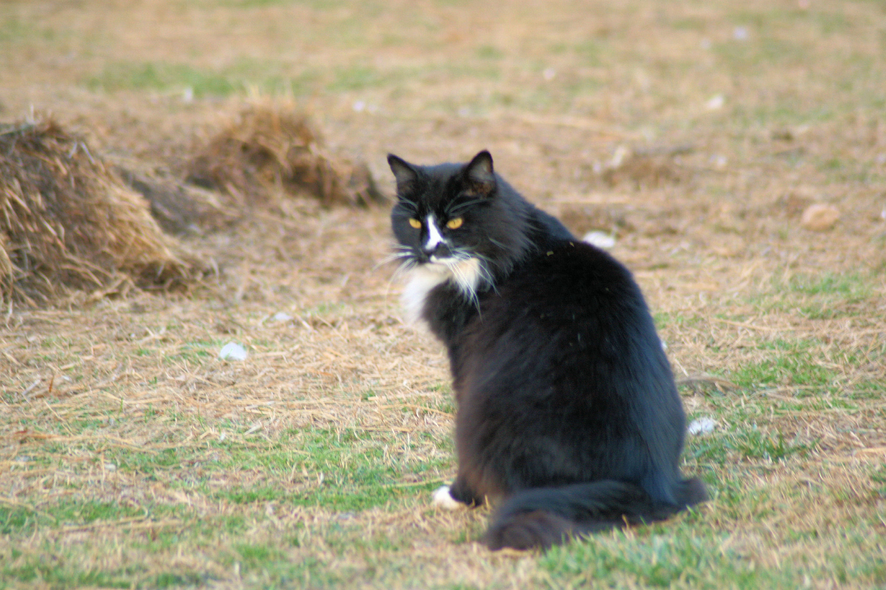
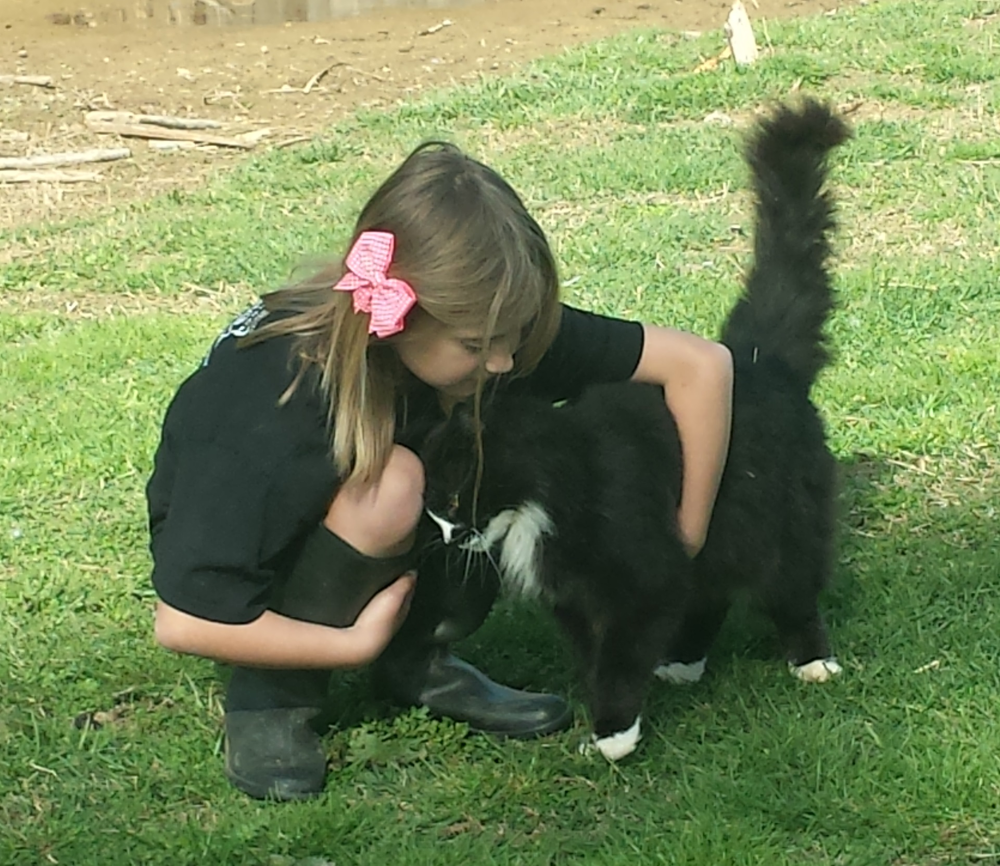
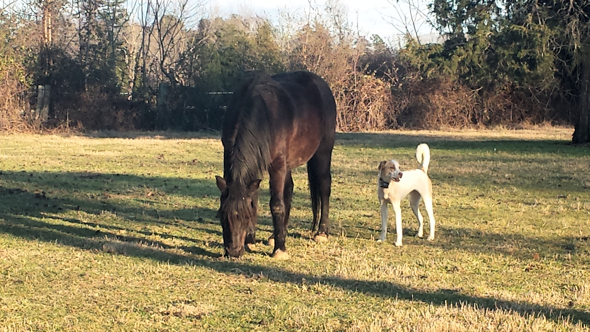
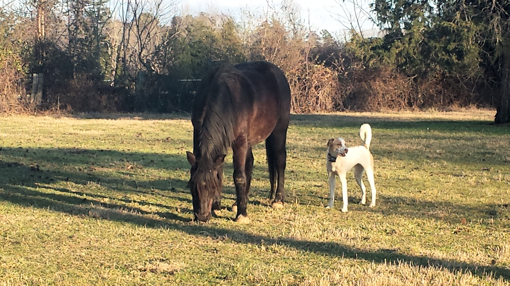
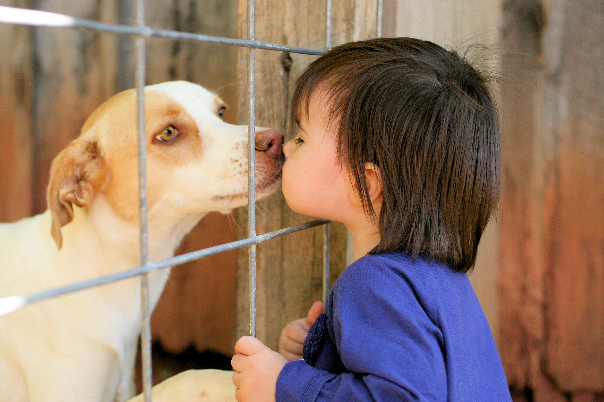

|
|---|
|
|---|
| Home |
About | Poultry |
On the Hoof |
Other Animals |
Visit Us |
Contact Us |
Other Animals
We have a few other animal on the farm that give us great joy, so we thought we should have a page just for them! Rabbits: Our rabbits are actually not pets. They provide our family with nutritous food. They also provide great fertilizer for the garden. Plus, they are cute. Yeah rabbits! Trouble: Our sweet and cuddly barn cat. He will start to drool when you pet him, so watch out. You won't see him around much during the day, he loves to explore and sun himself. He knows when it is time for us to do our nightly animal care as he is always around to receive his hugs.   Starbright: Our lovely horse (pony actually). Starbright came to us in early 2016. He is such a gentle guy. He has enjoyed his pasture time - maybe a little too much. Our youngest child has been learning ot ride for a couple of years and Starbright is a great horse for her. He has been known to give rides to visiting kids as well.   Cupcake: Our dog. Shis is an incredibly sweet dog - not very obedient, but very sweet. She LOVES to run and play with any animal or child that will join her. Her coat is super soft. She loves to be pet and she loves to lick. If you visit the farm, she is going to run around your car. Don't worry, she will move, jsut keep driving. |
||||||